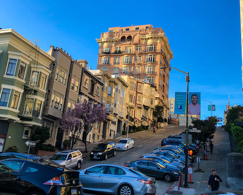
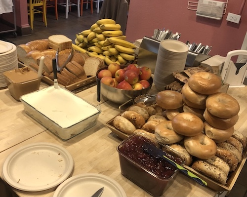
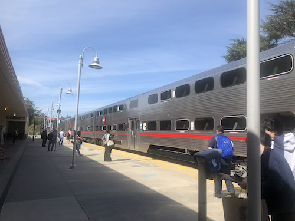
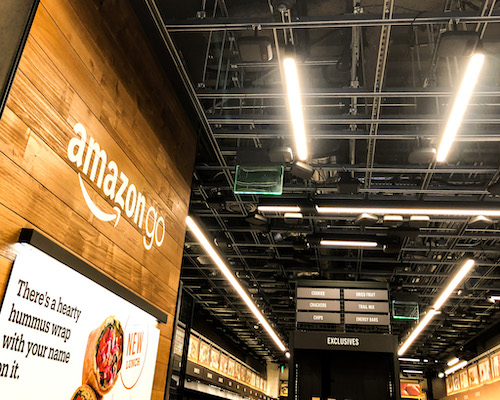

サンフランシスコ

Powell
滞在した都市です。本当に坂が多くて現地人が歩いているのを見ませんでした。サンフランシスコらしい綺麗な街並みでした。清潔さでは日本が圧倒的でした。

Hostel
滞在した宿での朝食です。ベーグルにフルーツ、オレンジジュースがあってアメリカっぽい食事でした。
ホステルは一部屋4人部屋で、1人のブラジル人と同室でした。
散歩
旅行では早朝に起きて散歩することがあります。少しずつ明るくなっていく中、自由気ままに歩けるのでとても気持ち良いです。
出発するときにコーヒーを買いました。スタバはあまり好きではありませんが、早くから開き、現地人と会話をしたかったので購入しました。正確に名前を聞き取ってもらえて良かったです。ちなみに自分で撮った写真がなかったので，コウダイという友人に写真をもらいました．

Cal Train
アメリカは公共交通機関が微妙です。これは完全に私の勉強不足でしたが、乗車方法を間違えていたようで、車掌さんと口論になってしまいました。近くにいた白人のお兄さんに助けてもらい、なんとかなりました。その時は本当にどうなってしまうのか不安でした。

Amazon Go
店を出るだけで決済できるシステムを備えた店舗です。無数のセンサが設置されていて、隅々まで見て周りたかったです。大学でもこのような研究をしたかったです。